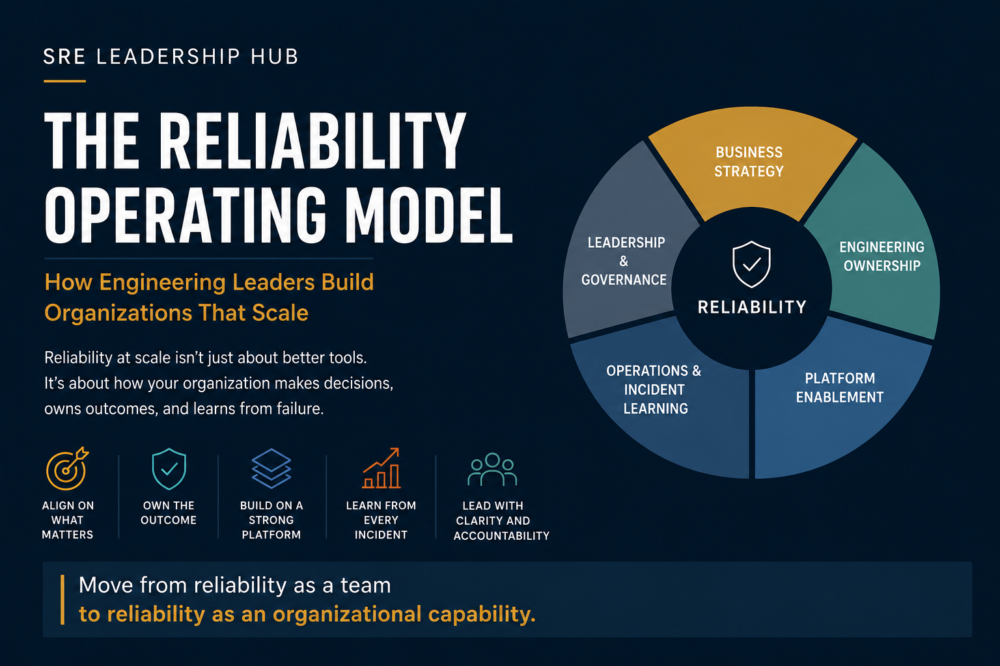

The Reliability Operating Model: How Engineering Leaders Build Organizations That Scale
How engineering leaders can build a reliability operating model that connects business priorities, engineering ownership, platforms, operations and leadership.
How engineering leaders can build a reliability operating model that connects business priorities, engineering ownership, platforms, operations and leadership.

I've seen organizations invest heavily in observability, automation, SRE teams, incident-management platforms, and increasingly AI-driven operations—and still struggle with the same reliability issues year after year.
The technology gets better. The dashboards get better. The incident tooling gets better. But the organization doesn't necessarily get better at making reliability decisions.
At a certain scale, reliability stops being something an individual team can solve. A service depends on another service. That service depends on a platform. The platform depends on infrastructure. Product decisions influence operational risk. Business priorities determine how much engineering capacity is available to address that risk.
Eventually, reliability becomes a question of how the organization operates.
That's what I mean by a reliability operating model.
It isn't another SRE framework to roll out. It is the way an engineering organization decides what matters, who owns it, how trade-offs are made, and how the organization learns when things go wrong.
One of the easiest organizational mistakes to make is to say: "SRE owns reliability."
It sounds reasonable. It also creates the wrong incentive.
If SRE owns reliability, product engineering can start thinking of reliability as something SRE manages on their behalf. SRE gets pulled into escalations, reviews deployments, fixes operational problems, and becomes the safety net for everyone else.
That's not the model I believe scales well.
The product engineering team should own the reliability of what it builds. The platform organization should make the reliable path easier. SRE should provide expertise, standards, enablement, automation and leverage. Engineering leadership should make sure the organization has the right priorities, investment and decision mechanisms.
SRE doesn't replace engineering ownership. It amplifies it.
Reliability problems rarely respect organizational boundaries.
A customer experiences a failed transaction. The application team sees an application error. The platform team sees resource pressure. The database team sees connection exhaustion. The network team sees latency. The business sees lost revenue.
The customer simply sees: "It didn't work."
This is why reliability cannot be managed effectively through isolated team metrics.
I think about it through five areas:
None of these operates independently. When they do, every team optimizes locally and the organization pays the price.
A common reliability conversation starts with availability: "Should this service be 99.9% or 99.99%?"
That's useful, but it isn't where I would start.
I'd start with:
What happens to the business if this capability isn't available?
A customer checkout flow and an internal reporting application shouldn't necessarily receive the same reliability investment. A five-minute outage might be insignificant for one system and extremely expensive for another.
Reliability has a cost. So does unreliability.
Good engineering leadership is about understanding both.
That means reliability targets should ultimately connect to customer experience and business impact.
Ownership cannot simply mean that a team receives an alert.
Real ownership means the team understands:
I've always found that reliability improves when engineers can connect a technical failure to an actual customer or business outcome.
A latency graph is abstract. A customer unable to complete a transaction isn't.
That connection changes engineering decisions. It also changes how teams think about production.
Production is no longer somewhere operations people take care of after development is finished.
Production becomes part of engineering ownership.
A platform team can either make reliability easier or create another layer of complexity. The difference is usually whether the platform is designed around developer outcomes.
If every engineering team has to figure out how to instrument a service, create dashboards, configure alerts, deploy safely, roll back, integrate incident management and establish operational guardrails, reliability becomes inconsistent.
The platform should absorb as much of that complexity as possible.
A good platform gives engineers a reliable starting point. Observability should be available by default. Deployment safety should be built in. Operational patterns should be reusable.
The question I like to ask platform teams is:
Are we making the right engineering behavior easier, or are we just giving teams another tool to learn?
There is a natural tendency during an incident to focus on restoring service. That's right. Customers need the service back.
But recovery is only the first outcome.
The more interesting question comes afterward:
Did the organization become better because this incident happened?
A useful incident review should lead to changes in architecture, automation, monitoring, testing, capacity, dependencies, documentation, ownership or engineering practices.
And sometimes the answer isn't a technical change at all.
Sometimes the incident exposes a decision-making problem. Perhaps nobody had authority to stop a risky release. Perhaps three teams assumed another team owned a dependency. Perhaps an operational risk was known but repeatedly deferred.
Those are organizational problems.
A post-incident review should be willing to surface them. Otherwise, we are documenting failure rather than learning from it.
SLOs and error budgets are often presented as reliability mechanics. I think their greater value is organizational.
An error budget gives engineering and product leaders a common language for discussing risk.
When reliability is healthy, teams have room to move quickly. When the budget is being consumed rapidly, the organization has evidence that something needs attention.
That doesn't automatically mean: "Stop all feature development."
The real question is:
Given the current reliability position, what is the right engineering decision?
Maybe the answer is to slow releases. Maybe it is to fix a specific dependency. Maybe it is to invest in capacity. Maybe the service isn't important enough to justify the existing SLO.
The important thing is that the decision becomes explicit.
I've seen organizations with good SLOs, good dashboards and good incident processes still struggle because nobody knows who has the authority to make the difficult decision.
Who can stop a release? Who can accept a reliability risk? Who decides that reliability work takes priority? Who resolves a dependency problem involving multiple teams? Who decides whether a systemic issue deserves engineering investment?
If those answers aren't clear, the organization eventually falls back to escalation.
Someone calls a senior engineer. Someone calls an architect. Someone asks the VP. Someone gets pulled into a meeting.
That's not a scalable decision system.
Good operating models make decision rights explicit.
Not every decision needs to reach leadership. In fact, the goal should be to make most reliability decisions without leadership intervention.
Technical metrics tell us what happened. Organizational metrics can help explain why.
These questions reveal something that availability alone cannot.
They tell us whether the organization is becoming more capable.
That's what I would want an executive reliability review to show. Not fifty charts. A small number of signals that answer:
Are we getting more reliable, more predictable and less dependent on heroics?
Every difficult production issue ends up with SRE. The organization becomes dependent on them instead of becoming better because of them.
Teams publish SLOs. Dashboards look good. Nothing changes when the budget is consumed.
Instead of self-service and reusable capabilities, engineers wait for the platform team.
The postmortem is completed. The action items are created. Six months later, the same problem happens again.
But somehow it never wins when priorities are discussed. If reliability is always important but never receives capacity, ownership or investment, the organization isn't actually prioritizing it.
Forget the maturity model for a moment. Ask one question:
If your three most experienced SREs left tomorrow, what would happen to reliability?
If the answer is, "We would struggle significantly," that's useful information.
It doesn't mean those people weren't valuable. It means the organization hasn't yet converted their expertise into organizational capability.
The next step isn't necessarily hiring more SREs. It may be better platform capabilities, documentation, engineering ownership, automation, decision rights, operational standards or learning mechanisms.
The goal is to make expertise transferable and repeatable.
Look at the most important customer journeys, the services behind them, current ownership, major dependencies, recent incidents, SLOs and error-budget behavior, operational toil and known reliability risks.
But don't just ask what failed.
Where does the organization currently depend on heroics?
That question tends to uncover the deeper problems.
Clarify ownership. Clarify decision rights. Identify the handful of reliability problems that repeatedly consume engineering attention.
Work with platform and SRE to remove the biggest sources of friction.
Don't try to fix everything. Fix the things that keep coming back.
Establish a lightweight reliability review. Track the few metrics that actually matter. Create a clear escalation path for systemic risks. Make incident learning visible beyond the team that experienced the incident.
And most importantly, make reliability part of normal engineering planning.
If reliability requires a special program forever, something is probably wrong with the operating model.
A mature reliability organization doesn't mean incidents disappear.
It means the organization responds differently when they happen.
Engineers understand their services. Teams know their operational responsibilities. Platforms provide reliable defaults. SRE is focused on leverage rather than endless escalation. Leaders understand the business consequences of reliability decisions. Incident learning travels across organizational boundaries.
And difficult trade-offs are made explicitly instead of being hidden inside technical teams.
That's a very different organization from one where reliability depends on who happens to be on call.
For me, the real test of a reliability operating model is not:
"How many incidents did we have this quarter?"
It's:
"Are we becoming an organization that is better prepared for the next incident than we were for the last one?"
If the answer is yes, reliability is becoming an organizational capability.
If the answer is no, adding another dashboard probably isn't going to solve the problem.
Reliability doesn't scale because organizations hire more SREs.
It doesn't scale because organizations buy better monitoring.
It doesn't scale because someone creates another operational process.
It scales when the organization itself gets better at making reliability decisions.
Business leaders understand the value of reliability.
Engineering teams own what they build.
Platforms make good engineering practices easier.
SRE creates leverage and expertise.
Incident management creates learning.
Leadership establishes the priorities and decision boundaries.
Those pieces reinforce one another.
That's the operating model.
And when it works, reliability stops being something an organization manages separately.
It becomes part of how the organization builds, delivers, operates and improves software.
The goal isn't an organization that never fails.
The goal is an organization that doesn't need heroes to recover, learn and get better.
If the people who know production best were unavailable tomorrow, would your reliability practices still work?
If the answer is no, you may not have a reliability problem.
You may have an operating-model problem.
Explore more practical perspectives on reliability, engineering leadership, platform strategy and operational excellence.
Explore Insights